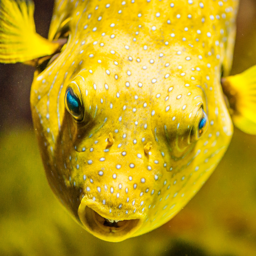
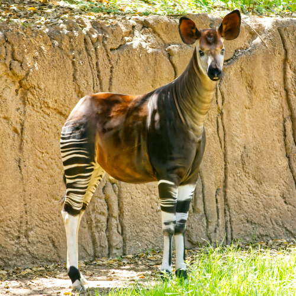
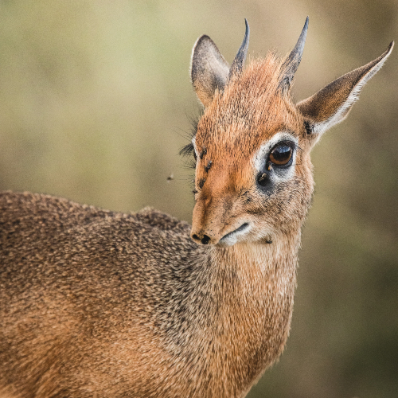

The Shoebill in it's natural habitat
The shoebill also known as the whalebill, whale-headed stork or shoe-billed stork, is a very large long-legged wading bird. It derives its name from its enormous shoe-shaped bill.
Learn MoreHaven't you always wanted to know more about them?
We'll start by looking at this incredibly peculiar bird
The shoebill also known as the whalebill, whale-headed stork or shoe-billed stork, is a very large long-legged wading bird. It derives its name from its enormous shoe-shaped bill.
Learn MoreThe shoebill is normally silent, but they perform bill-clattering displays at the nest. When engaging in these displays, adult birds have also been noted to utter a cow-like moo as well as high-pitched whines. Both nestlings and adults engage in bill-clattering during the nesting season as a means of communication. When young are begging for food, they call out with a sound uncannily like human hiccups.
Learn MoreEchidna Fun
Blobfish Bubbles
What even is this?
Bambi?